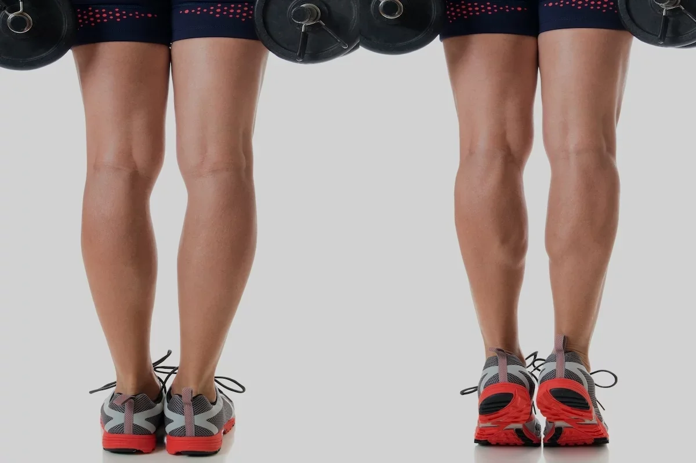
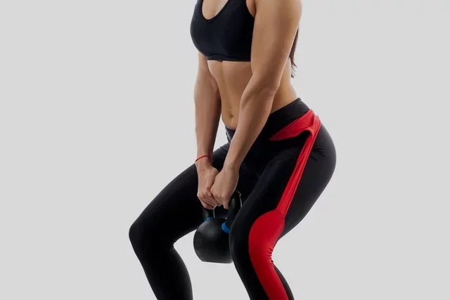

5 Exercícios para treinar perna em casa
O treino de pernas para fazer em casa é simples e fácil permitindo trabalhar glúteos, panturrilha, coxa e parte posterior da perna, podendo ser feitos com ou sem a utilização de pesos.
Esses exercícios ajudam a melhorar a resistência e a força muscular, além de tonificar a pele, combater a flacidez e, no caso de mulheres, melhorar a aparência da celulite. No entanto, deve-se sempre ter em consideração as condições físicas e as limitações do corpo para evitar lesões como contusão, estiramento ou distensão muscular.
Por isso, é importante uma avaliação médica antes de iniciar qualquer atividade física e de um educador físico que pode orientar treinos que atendam às necessidades e objetivos de forma individualizada.
1. Flexão plantar
Esse exercício ajuda a fortalecer os músculos da panturrilha, além de melhorar o equilíbrio do corpo e prevenir lesões em treinos de corrida ou caminhada, por exemplo.
Como fazer: apoiar-se em uma parede ou no encosto de uma cadeira. Com a coluna reta e o abdômen contraído, ficar de ponta de pé e retornar à posição inicial. Esse treino pode ser feito em 3 séries de 12 a 20 movimentos e com 20 a 30 segundos de descanso entre cada série.
Opção com peso: pode-se usar caneleira, uma em cada perna, ou segurar peso nas mãos como halteres ou usar garrafas pet com água ou areia, para intensificar o trabalho muscular.
2. Elevação de perna
Como fazer: apoiar-se em uma parede ou no encosto de uma cadeira. Com a coluna reta e o abdômen contraído, ficar de ponta de pé e retornar à posição inicial. Esse treino pode ser feito em 3 séries de 12 a 20 movimentos e com 20 a 30 segundos de descanso entre cada série.
Opção com peso: pode-se usar caneleira, uma em cada perna, ou segurar peso nas mãos como halteres ou usar garrafas pet com água ou areia, para intensificar o trabalho muscular.
3. Agachamento
O agachamento é um exercício completo para as pernas pois trabalha glúteo, coxas, panturrilha, parte posterior das pernas e abdômen.
Como fazer: pegar uma cadeira e apoiar uma mão na parte do encosto. Com a coluna reta e abdômen contraído, elevar uma perna para frente e depois levar a perna para trás, fazendo movimentos como se a perna fosse um pêndulo. Repetir o exercício com a outra perna e voltar à posição inicial. Esse treino pode ser feito em 2 a 3 séries de 10 a 15 repetições.
Opção com peso: pode-se usar caneleira, uma em cada perna, ou segurar peso nas mãos como halteres ou usar garrafas pet com água ou areia, para intensificar o trabalho muscular.
4. Agachamento isométrico
Como fazer: em pé, afastar os pés, alinhados à largura dos ombros. As costas devem sempre ficar retas e abdômen contraído. Descer lentamente flexionando os joelhos, inclinando o tronco ligeiramente para frente e empurrando o bumbum bem para trás, como se fosse sentar numa cadeira invisível. Descer até que os joelhos fiquem num ângulo de 90 graus e não ultrapassem a ponta dos pés. Voltar à posição inicial. Fazer 3 séries de 20 repetições com 1 minuto de descanso entre as séries.
Opção com peso: pode-se usar como peso uma bola de kettle ou halter e, caso não os tenha, pode-se colocar um ou mais pacotes de 1kg de arroz ou de feijão dentro de uma mochila, por exemplo. Assim, deve-se pegar o peso, e com os dois braços à frente do corpo segurá-lo e fazer o movimento do agachamento descendo com os braços alinhados ao corpo.
5. Agachamento búlgaro
O agachamento búlgaro é um dos treinos mais eficientes para trabalhar as coxas e os glúteos, melhorando o fortalecimento e o alongamento muscular, além de tonificar as pernas.
Como fazer: de costas, apoiar uma perna em cima de uma cadeira ou um banco, mantendo o outro pé no chão. Flexionar o joelho da perna que está apoiada no chão, descendo como se tivesse agachando. É importante manter a coluna reta e os pés e quadris alinhados. Fazer 3 séries de 10 repetições com cada perna, descansando 1 minuto entre cada série.
Opção com peso: pode-se usar um halter em cada mão para fazer os agachamentos ou usar garrafa pet cheia com água ou areia ou pacote de 1kg de arroz ou feijão, por exemplo.
O que fazer depois do treino
Após o treino de pernas, é importante fazer alongamentos para ajudar a relaxar a musculatura, reduzir a rigidez muscular e evitar cãibras, além de tonificar os músculos, melhorar a flexibilidade e prevenir lesões.
Os alongamentos para as pernas devem incluir os músculos da parte anterior e posterior da coxa e panturrilha. Para fazer esses alongamentos, não é necessário o uso de pesos.
1. Alongamento da parte posterior da coxa
O alongamento da parte posterior da coxa pode ser feito sentado no chão, permitindo alongar os músculos posteriores da coxa, o glúteo, a panturrilha e a planta do pé.
Como fazer: deve-se sentar no chão com as pernas retas, dobrar uma das pernas e com a coluna reta e ombros alinhados, inclinar o corpo para frente para alcançar o pé com uma mão e tentar puxá-lo em direção ao corpo, segurando por 20 a 30 segundos. Repetir com a outra perna.
2. Alongamento da parte anterior da coxa

Como fazer: apoiar-se em uma perna e dobrar a outra para trás, segurando-a com as mãos por 30 a 60 segundos. Repetir com a outra perna.